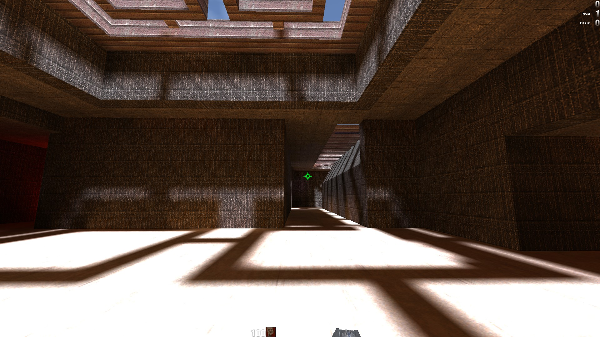
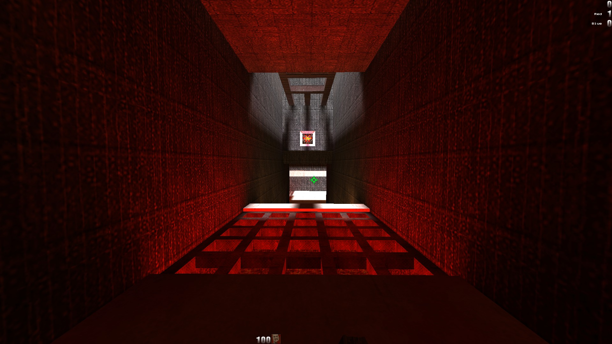
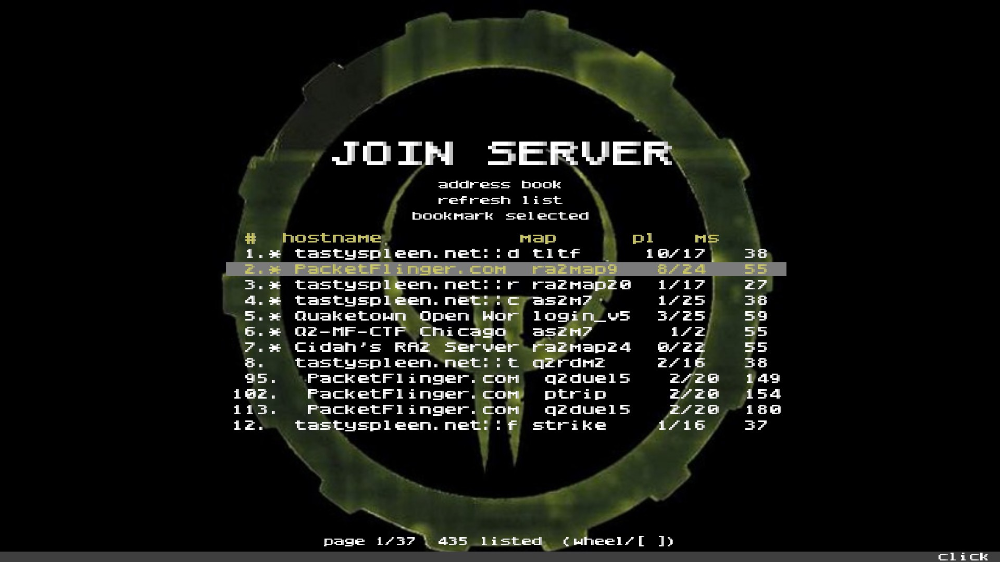

01
HUD layout
Move the stock status bar to the top, spread it across a widescreen display, or keep the classic layout. Adjust its scale without resizing the menus.
Stock status bar only. Server and mod HUDs keep their own layouts.
QUAKE II CLIENT / WINDOWS
A Quake II client for Windows, based on r1ch’s R1Q2 and maintained by h0s3r. Display, HUD, audio, multiplayer, and configuration options alongside classic gameplay.

02 / FEATURES
Display, HUD, crosshair, audio, server browsing, and demo options. The GIFs use the original Quake II textures and weapons.
Move the stock status bar to the top, spread it across a widescreen display, or keep the classic layout. Adjust its scale without resizing the menus.
Stock status bar only. Server and mod HUDs keep their own layouts.Reduce the yellow cast of baked lighting. Switch between the softened look and classic lighting in real time, without reloading the map.
Original textures stay intact. Colored accent lights keep their character.

Set your crosshair style, size, color and opacity. Per-hand offsets and optional layers let you adjust crosshair placement and size.
Shown here with stock crosshairs. Extra overlay art can come from your own packs.
Browse servers with hostnames, maps, player counts, and ping. Refresh the list or bookmark selected servers in the Address Book.

OpenAL support for positional world sounds. Your own shots stay on the listener, with DirectSound fallback available.
Automatic demo recording, playback pause and speed controls, plus location files for naming spots on the map.
04 / DOCUMENTATION
A searchable guide to display, graphics, HUD, input, network and demo settings. Defaults, explanations and examples, directly from CVARS.md.
Open the CVAR guide] seta scr_hudwide 1
] seta cl_adjustfov 1
] seta gl_less_yellow 1
// saved settings
05 / DOWNLOAD
Windows x86 release for an existing Quake II installation. The package does not include game data.
Client, dedicated server, R1GL renderer, game module, and required runtime libraries.
Download release ZIP Requires an existing Quake II installation. Retail / Steam game data is not included.Install the original game. Quit any running Quake II client and back up your existing binaries.
Place the files next to quake2.exe. For local single-player, also place gamex86.dll in baseq2/.
Run R1Q2v2.exe. Explore the menus or open the CVAR guide for additional settings.
SUPPORT
R1Q2v2 is free. Donations to support its maintenance are optional and appreciated.